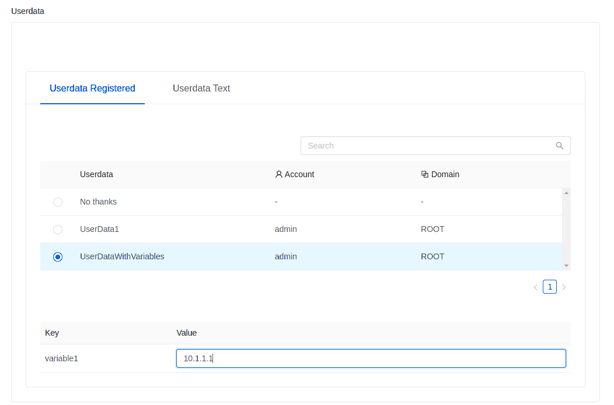

Instance User-Data#
Users can register userdata in Zergaw CloudStack and refer the registered userdata while deploying or editing or reset userdata on an instance. The userdata content can also be directly provided while deploying the instance. Userdata content length can be up to 32kb.
Register Userdata#
To register a new userdata:
Log in to the UI.
In the left navigation bar, click Compute and then User Data.
Click Register a userdata.
In the dialog, make the following choices:
Name: Any desired name for the userdata.
Userdata: Plain userdata content. The UI does base64 encoding.
Userdata parameters: Comma separated list of variables which (if any) declared in userdata content.
Domain: An optional domain for the userdata.
Account: An optional account for the userdata.
{kind=link}
If userdata content has variables declared in it, user can register the Userdata with userdata parameters.
For example, if userdata content is like below having a custom variable “variable1”
## template: jinja #cloud-config runcmd: - echo 'TestVariable {{ ds.meta_data.variable1 }}' >> /tmp/variable - echo 'Hostname {{ ds.meta_data.public_hostname }}' > /tmp/hostname
Userdata has to be registered with userdata parameter “variable1” like below
{kind=link}
If the variables in userdata content are of a predefined metadata like “public_hostname” or “instance_id”, then userdata parameters should not declare these variables. That is the reason in the above example “public_hostname” is not declared.
There are three APIs that can be used to provide user-data to instance:
deployVirtualMachine, updateVirtualMachine and resetUserDataForVirtualMachine.
These APIs accepts parameters userdataid and userdatadetails.
userdatadetails is to specify the custom values for the variables which are declared
in userdata in a key value parameter map details.
{kind=link}
If the userdata contains variables that are declared during registration then those values has to be specified like below,
{kind=link}
These details will be saved as meta-data file(s) in both config drive and virtual router, which in turn support jinja based instance meta-data feature of cloud-init, refer to https://cloudinit.readthedocs.io/en/latest/topics/instancedata.html.
These APIs also support the parameter userdata= to provide the userdata content
directly. The value for this parameter must be a base64-encoded
multi-part MIME message. See further below for an example of what this should look like.
The registered UserData can be linked to a Template or ISO on registration/upload/editing using linkUserDataToTemplate API. The same API can be used to unlink the mapping of userdata and Template.
While linking userData to a Template/ISO userdata override policy has to be specified. Following are the override policies available:
- Allow Override: Allow users to override UserData for the Template during instance deployment or on reset.
This is the default override policy if not specified
Deny Override: Override of UserData isn’t allowed during instance deployment or on reset.
- Append Only: Don’t allow users to override linked UserData but allow users to pass userdata content
or ID that should be appended to the linked UserData of the Template. When the users pass userdata it is appended to the Template userdata in the form of a multipart MIME message
This is how it looks like in Template/ISO register/upload/edit forms.
{kind=link}
Based on these override policies, “Add Instance” UI form provides relevant options to either override or append. If it is “Deny Override” then “Add Instance” will not allow adding user specific userdata
Storing and accessing userdata#
HTTP GET parameters are limited to a length of 2048 bytes, but it is possible to store larger user-data blobs by sending them in the body via HTTP POST instead of GET.
From inside the instance, the user-data is accessible via the virtual router, if the UserData service is enabled on the network offering.
If you are using the DNS service of the virtual router, a special hostname called data-server. is provided, that will point to a valid user-data server.
Otherwise you have to determine the virtual router address via other means, such as DHCP leases. Be careful to scan all routers if you have multiple networks attached to an instance, in case not all of them have the UserData service enabled.
User-data is available from the URL http://data-server./latest/user-data
and can be fetched via curl or other HTTP client.
It is also possible to fetch instance metadata from the same service, via the URL
http://data-server./latest/{metadata type}. For backwards compatibility,
the previous URL http://data-server./latest/{metadata type} is also supported.
For metadata type, use one of the following:
service-offering. A description of the instances service offeringavailability-zone. The Zone namelocal-ipv4. The guest IP of the instancelocal-hostname. The hostname of the instancepublic-ipv4. The first public IP for the router.public-hostname. This is the same as public-ipv4instance-id. The instance name of the instance
Resetting UserData#
Log in to the UI.
In the left navigation bar, click Compute –> Instances.
Choose the Instance to reset userdata.
Note
The Instance must be in a stopped state.
Click on Reset Userdata button on the Instance.
Note
If the instance already has userdata applied to it, an extra dialog box will appear.
Disabled(Default) - This will reset the userdata using the already configured values. Skip the next step.Enabled- Choose this to override the already configured values. Continue to next step.
In the dialog box, choose one of the following:
Stored Userdata: Choose another userdata entry.
Note
Stored Userdata is created under Instances –> User Data
Manual Userdata Entry: Manually provide userdata for this Instance
Note
This can also be performed via API: resetUserDataForVirtualMachine: Resets the UserData for virtual machine.
Determining the virtual router address without DNS#
If can’t or don’t want to use the virtual router’s DNS service, it’s also possible to determine the user-data server from a DHCP lease.
Run the following command to find the virtual router.
# cat /var/lib/dhcp/dhclient.eth0.leases | grep dhcp-server-identifier | tail -1Access the data-server via its IP
# curl http://10.1.1.1/latest/user-data
Fetching user-data via the API#
User-data is not included with the normal instance state for historic reasons. To read out the base64-encoded user-data via the API, use the getVirtualMachineUserData API call:
cmk get virtualmachineuserdata virtualmachineid=8fd996b6-a102-11ea-ba47-23394b299ae9
Using cloud-init#
cloud-init can be used to access and interpret user-data inside Instances. If you install cloud-init into your Instance Templates, it will allow you to store SSH keys and user passwords on each new Instance deployment automatically (Adding Password Management to Your Templates and using ssh keys).
Install cloud-init package into an Instance Template:
# yum install cloud-init or $ sudo apt-get install cloud-initCreate a datasource configuration file in the Instance Template:
/etc/cloud/cloud.cfg.d/99_cloudstack.cfgdatasource_list: [ NoCloud, ConfigDrive, CloudStack ]
For more information, see Cloud-init integration
Custom user-data example#
This example uses cloud-init to automatically update all OS packages on the first launch.
Register the following user-data in CloudStack. If APIs are used to register userdata or to provide direct userdata text then userdata needs to be wrapped into a multi-part MIME message and encoded in base64:
base64 <<EOF Content-Type: multipart/mixed; boundary="//" MIME-Version: 1.0 --// Content-Type: text/cloud-config; charset="us-ascii" MIME-Version: 1.0 Content-Transfer-Encoding: 7bit Content-Disposition: attachment; filename="cloud-config.txt" #cloud-config # Upgrade the instance on first boot # (ie run apt-get upgrade) # # Default: false # Aliases: apt_upgrade package_upgrade: true EOFDeploy an instance with this user-data either by providing the UUID of the registered userdata or by providing base64 encoded userdata:
cmk deploy virtualmachine name=..... userdata=Q29udGVudC1UeXBlOiBtdWx0aXBhcnQvbWl4ZWQ7IGJvdW5kYXJ5PSIvLyIKTUlNRS1WZXJzaW9uOiAxLjAKCi0tLy8KQ29udGVudC1UeXBlOiB0ZXh0L2Nsb3VkLWNvbmZpZzsgY2hhcnNldD0idXMtYXNjaWkiCk1JTUUtVmVyc2lvbjogMS4wCkNvbnRlbnQtVHJhbnNmZXItRW5jb2Rpbmc6IDdiaXQKQ29udGVudC1EaXNwb3NpdGlvbjogYXR0YWNobWVudDsgZmlsZW5hbWU9ImNsb3VkLWNvbmZpZy50eHQiCgojY2xvdWQtY29uZmlnCgojIFVwZ3JhZGUgdGhlIGluc3RhbmNlIG9uIGZpcnN0IGJvb3QKIyAoaWUgcnVuIGFwdC1nZXQgdXBncmFkZSkKIwojIERlZmF1bHQ6IGZhbHNlCiMgQWxpYXNlczogYXB0X3VwZ3JhZGUKcGFja2FnZV91cGdyYWRlOiB0cnVlCg==cmk deploy virtualmachine name=..... userdataid=<Userdata UUID>
Note
When using multipart userdata, cloud-init expects userdata format of one particular type only in one multipart section.